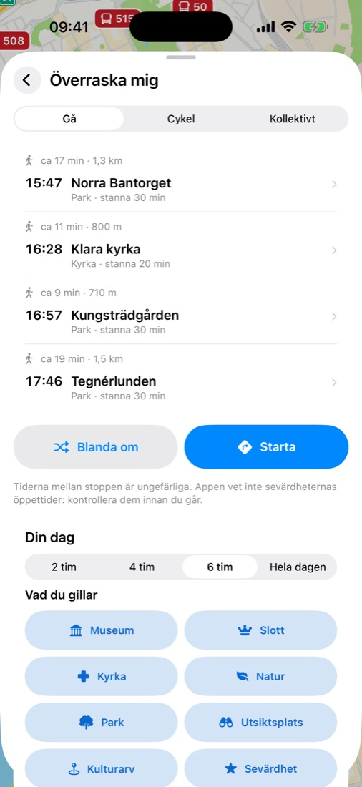
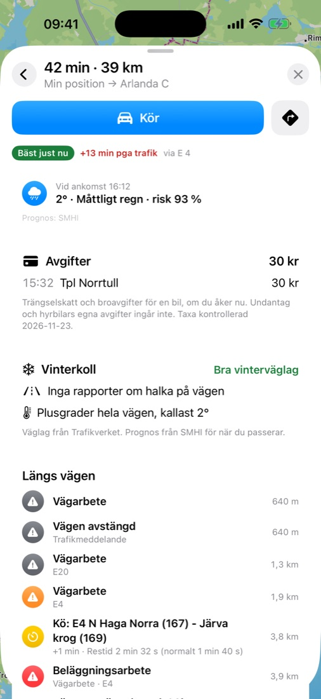
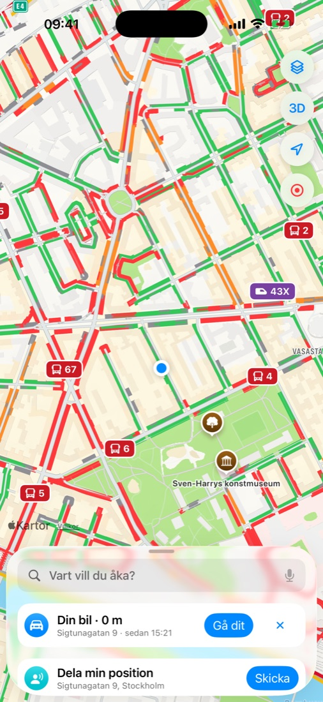
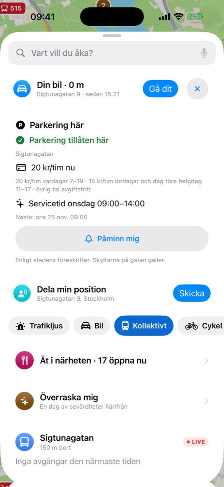

Se trafiken medan den händer.
360Maps samlar bussar, tåg, köer, väglag, regn och störningar på en karta för iPhone.
Det här ser du på kartan
Slå på det du behöver. Allt hämtas från myndigheternas och trafikbolagens öppna data och uppdateras medan du tittar.
-
Utvalda ställen
Ställen vi väljer ut åt besökare, till exempel de italienska espressobarer som italienare i Stockholm tipsar om. De syns alltid, oavsett zoom.
-
Restauranger, kaféer och barer
Var och en i sin färg, med öppettider, och en lista när du trycker på en grupp av dem. Omkring 20 000 ställen i hela Sverige.
-
Apotek och akutmottagningar
Apotek och sjukhusens akutmottagningar i hela Sverige, med öppettider. Vid livsfara: ring 112.
-
Badplatser, natur och norrsken
Badplatser med dagens vattentemperatur, nationalparker, naturreservat och isbanor, och chansen att se norrsken.
-
Bussar, tunnelbana, tåg och båtar
Fordonen rör sig på kartan med sitt linjenummer, i 15 län. Rött är buss, blått tunnelbana, lila tåg och turkos båt.
-
Köer och restider
Uppmätt restid på Stockholms leder och tunnlar, varje minut. En kö syns som +2 minuter mot normalt.
-
Väglag
Snö, modd och is på vägarna som linjer, med vad som ligger på vägen och när det plogades.
-
Regnradar
Nederbörden just nu från SMHI:s väderradar, var femte minut. Blått är lätt, gult och rött kraftigt.
-
Störningar och vägarbeten
Olyckor, avstängningar och vägarbeten från Trafikverket, med plats och tid.
-
Trafikkameror
Tryck på en kamera för att se vägen. Bilden uppdateras av sig själv medan du tittar.
-
Färjor och fartyg
Nästa avgång för Trafikverkets vägfärjor, och fartyg i rörelse ute till havs.
-
Trafikljus på vägen
Var nästa trafikljus kommer när du kör. Färg och nedräkning kommer när städerna delar sina signaldata öppet.
-
Polisen, Krisinformation och SMHI
Händelser där du är, viktiga meddelanden till allmänheten och varningar för vädret.
Så ser det ut
Bilder från appen, tagna med riktig data.


Från A till B
- Bil
- Kollektivt
- Cykel
- Gång
Välj hur du vill resa. 360Maps jämför vägarna med trafiken just nu och visar vad som finns längs just din väg: köer, väglag, vägarbeten, färjor och trafikljus. Med kollektivtrafik får du avgångar, förseningar och byten för hela Sverige.
Kör du fel räknar appen om vägen, och hittar den en väg som är minst tre minuter snabbare säger den till.
En dag på stan

Överraska mig
Appen planerar en dag härifrån: sevärdheter och parker, med lunch och fika på ställen som har öppet. Välj att gå, cykla eller åka kollektivt, och blanda om tills dagen passar.
Museer, slott och kyrkor läggs före klockan 17, eftersom appen inte känner deras öppettider.
Ska du med en buss eller ett tåg? Tryck på avgången och välj Ta mig dit i tid, så säger appen när du behöver gå.
Bra att veta i Sverige
Nödnummer ett tryck bort, solens upp- och nedgång i dag, helgdagarna och vad som stänger, betala och dricks, Systembolaget, kranvatten, eluttag och allemansrätten. Med en omräknare till kronor efter Europeiska centralbankens kurs, och tolv svenska fraser som läses upp med betydelsen på ditt språk.
På kvällen visar appen museer och sevärdheter nära dig som fortfarande har öppet, och när det blir regn museer och kyrkor att gå till i stället. Ställen med fri entré är markerade.
Gratis och 360Maps Plus
Kartan med alla lager, sökning, kollektivtrafik, cykel, gång, Överraska mig och att planera en bilrutt är gratis. Dina tre första resor med vägledning i bilen är också gratis.
Med 360Maps Plus får du vägledning i bilen: sväng för sväng uppläst, varningar om köer, halka och vägarbeten, och ny väg när trafiken ändras. Och det här:

Vad resan kostar, och vinterkoll
Trängselskatt och broavgifter längs bilrutten, räknade för när du passerar, och vad det blir om du åker senare.
Från 1 november till 30 april: is och snö längs vägen, temperaturen där du är när du kommer dit, och SMHI:s varningar.

Parkeringsregler i Stockholm
Zooma in, så färgas trottoarkanterna: grönt där du får stå, orange där gatan städas inom ett dygn, rött där det är förbjudet nu och grått där platsen är reserverad.
Enligt stadens föreskrifter. Skyltarna på gatan gäller.

Där bilen står
Spara var bilen står, så visar appen vad som gäller just där: pris nu, hela taxan och när gatan städas.
Påminn mig ger en notis kvällen innan och en timme innan servicetiden börjar.
Plus finns som en vecka (39 kr, ingen prenumeration), per månad (49 kr), per år (349 kr) eller som engångsköp (599 kr). Priserna gäller i Sverige; App Store visar priset i ditt land. Villkor.
Öppna data
Allt på kartan kommer från öppna data från myndigheter och trafikbolag.
Bland källorna: Trafiklab och Samtrafiken, SL, Trafikverket, SMHI, Polisen, Krisinformation.se, Stockholms stad och © OpenStreetMap-bidragsgivare. Alla källor och licenser står i appen, under Källor, licenser och integritet.
Support
Hittar du ett fel, saknar du något på kartan eller har du en fråga om appen? Mejla raztechsupport@icloud.com, så svarar vi. Svar på vanliga frågor finns på supportsidan.